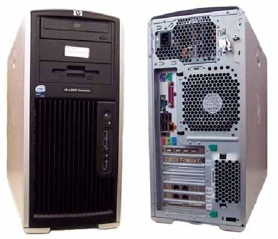
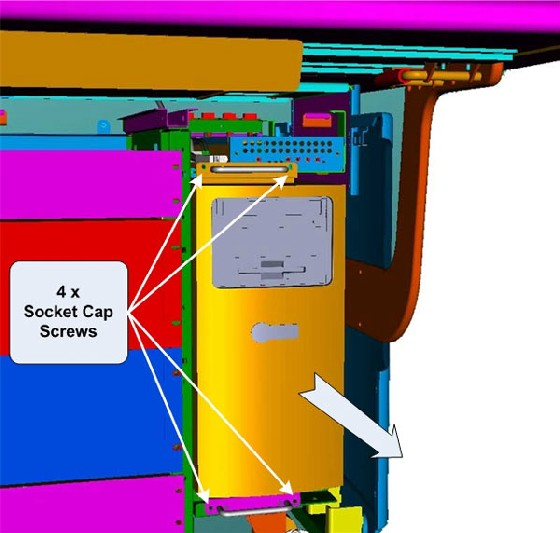
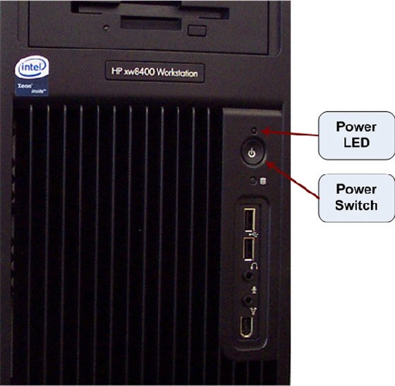

Operating Documentation
Direction 5193574-800, Rev# 22
LightSpeed 7.X Service Methods
Module Version 3.0, Version Date 6/2/10
Operating Documentation |
| Required Persons | Preliminary Reqs | Procedure | Finalization |
|---|---|---|---|
| 1 |
This procedure describes and illustrates the steps necessary to replace the Host Computer.
| Last revised: | 2-June-2010 |
Illustration 1: Host Computer

| Item | Qty | Effectivity | Part# | Manufacturer | |
|---|---|---|---|---|---|
| Standard FE Toolkit | 1 | - | - | - | |
| 4 mm Hex Key Wrench | 1 | - | - | - | |
| Item | Qty | Effectivity | Part# | Manufacturer | |
|---|---|---|---|---|---|
| Host Computer (HP xw8400) | 1 | - | 5183547-37 for CT750 HD | - | |
| - | - | - | 5183547-38 for VCT XT / XTe | - | |
| ||||
| ELECTROCUTION HAZARD | ||||
| HIGH VOLTAGE PRESENT | ||||
| USE PROPER LOCKOUT / TAGOUT PROCEDURES BEFORE REPLACING THE COMPONENTS. |
| ||||
| POTENTIAL FOR INJURY TO SERVICE PERSONNEL | ||||
| HOST COMPUTER CHASSIS CAN WEIGH IN EXCESS OF 40 POUNDS. | ||||
| DEPENDING ON YOUR HEIGHT AND ACCESS TO EQUIPMENT REMOVAL/INSTALLATION, LIFTING ASSISTANCE MAY BE REQUIRED. USE YOUR JUDGMENT TO DETERMINE IF LIFT ASSIST OR A SECOND PERSON MAY BE REQUIRED TO ASSIST IN REMOVAL AND INSTALLATION. |
| ||||
| FOLLOW ALL REQUIRED SAFETY AND PPE PROCEDURES CUSTOMARY FOR YOUR ORGANIZATION WHEN WORKING ON THIS PRODUCT. | ||||
| Condition | Reference | Effectivity |
|---|---|---|
Access to both the front and rear of the Operator Console is required. Move the console away from walls and remove obstacles in room. | - | - |
Only trained service personnel should service the GE CT Scanner. | - | - |
Select one of the following methods to power off the Operator Console:
If applications are running, click the Shut Down icon and select Shut Down.
If applications are down, open a Unix Shell using the Toolchest. Type: {ctuser@hostname} halt. Press <Enter>.
The Operator Console monitor will display a ‘System Halted’ message when it is acceptable to power off the Operator Console.
Power OFF the Operator Console at the front panel switch (Illustration 2).
Illustration 2: Console Power Switch

Perform the prescribed Lockout/Tagout procedure. For added protection, disconnect the Twist-N-Lock Main Power Cable from rear of console.
Remove the Front and Rear Operator Console Covers per the prescribed cover removal procedure..
Remove the cable connections to the Host Computer chassis being replaced.
| NOTE: | Verify that all cables are labeled and clearly marked. If necessary, add a label for clarity |
Remove the power cord at the rear of the Host Computer chassis
Remove the four (4) 5mm socket cap mounting screws (Illustration 3) from the front of the Host Computer chassis, holding the chassis to the Operator Console right side compartment.
Illustration 3: Host Computer Mounting

Slide the Host Computer chassis forward (out the front of console) and set aside. Refer to the Component Lifting procedure.
Follow the Host Computer NIC Exchange-HP8400 procedure. Then return to these instructions.
| NOTE: | The System Option Licenses are tied to Host Computer’s Ethernet (eth0) MAC address. The appropriate NIC cards (Port C, Bottom NIC Card, Slot 6) can be exchanged if one is reasonably certain that the Host Computer failure is not related to the NIC cards. This will allow for the reuse of System Option Licenses, otherwise new Licenses must be obtained. |
Slide the replacement Host Computer into the Operator Console from the front.
Replace the four (4) 5mm socket cap mounting screws to secure the Host Computer chassis to the Operator Console right side compartment. Torque to 4.6 N-m.
Mount the power cord to the rear of the Host Computer chassis and verify that its power switch on the Host Computer’s Power Supply is turned to the ON position.
Replace the rear cable connections.
Illustration 4: Host Computer Connections

| Connection | GOC6 |
| A | Motherboard USB - Keyboard |
| B | Motherboard USB - Mouse |
| C | Motherboard USB - Trackball |
| D | Motherboard USB - USB P-Tower, DVD-R/W |
| E | Motherboard USB - USB P-Tower, DVD-RAM |
| F | Motherboard GbE Ethernert - CNS Port 9 |
| G | Expansion Card USB - Barcode Reader |
| H | Expansion Card USB - Service Key |
| I | Expansion Card USB - External Hard Drive |
| J | Expansion Card USB - NOT USED |
| K | PS/2 Mouse * |
| L | PS/2 Keyboard * |
| M | Serial Port - Modem (optional) |
| N | Audio Out - ICOM |
| O | Audio In - ICOM |
| P | Monitor 2 - Scan |
| Q | Monitor 1 - Display |
| R | Expansion Card GbE Ethernet Port B - NOT USED |
| S | Expansion Card GbE Ethernet Port A - Hospital Network |
| T | Expansion Card GbE Ethernet Port D - TGP |
| U | Expansion Card GbE Ethernet Port C - CNS Port1 |
| V | SCSI 2 - DASM |
| W | SCSI 1 - MOD Drive |
| * GOC6 Consoles may use PS/2 Mouse and/or Keyboard | |
For cabling details, refer to the appropriate interconnect located in the System Diagrams folder of this service methods publication.
Reconnect the Twist-N-Lock Main Power Cable from rear of console and remove Lockout Tagout protection applied earlier.
Power ON the Operator Console at the console’s front panel switch.
Visually verify the Host Computer front panel Power LED is illuminated. If not, press the Host Computer’s front panel power switch to apply power to the Host Computer.
Illustration 5: Host Computer Power Switch

Verify that the Host Computer has powered up and is not displaying or sounding any POST Errors.
| NOTE: | See Host Computer Troubleshooting if any errors appear. |
In order to assure proper operation of the Host computer it is necessary to perform software Load from Cold (LFC). Refer to the GOC6 Load From Cold.
After completing the software LFC, make certain that you perform a final Save System State.
Refer to System State Save Restore.
After completing the LFC procedure, perform a complete shutdown of the Operator Console and restart the system.
Refer to System Scanning Test to confirm proper operation.
Reinstall Console Front and Rear Covers.